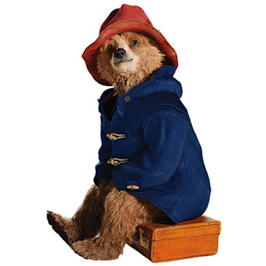

Paddington - A little bear will make a big splash

A young Peruvian bear travels to London in search of a home. Finding himself lost and alone at Paddington Station, he meets the kindly Brown family, who offer him a temporary haven.
Wout geeft deze film 4 sterren!

Paddington 2

Paddington, now happily settled with the Brown family and a popular member of the local community, picks up a series of odd jobs to buy the perfect present for his Aunt Lucy's 100th birthday, only for the gift to be stolen.
🥪 👜 Ma'amalade sandwich Your Majesty?
The Queen and Paddington Bear get the Platinum Party at the Palace rocking.